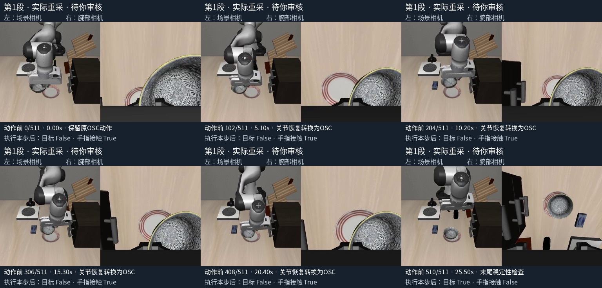
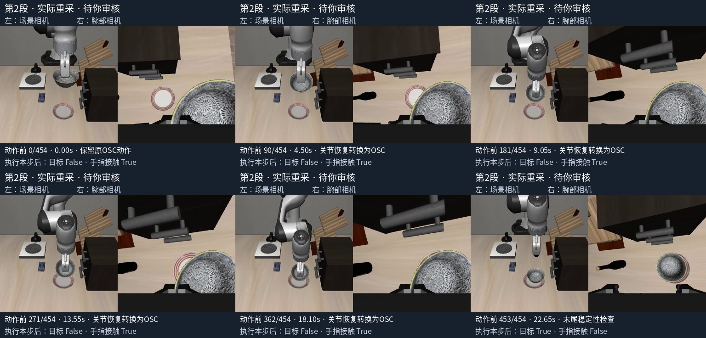

待你确认，尚未训练。 这是参考动作在新仿真中的执行，不是VLA自主恢复。每个训练候选动作都配对了本次执行前的场景相机、腕部相机和状态。 录像按20fps原速播放，没有加速。末尾20步是放稳检查，保留但不建议作为训练锚点。
请重点看：搬运是否合理、能否正确放到盘子、是否松爪、有无多余或不自然的动作。 这些片段从恢复中途开始，不代表从初始场景独立抓取。全部965步与上轮通过轨迹的物理状态、执行后像素和目标/接触标志精确一致。
491步恢复操作＋20步稳定性检查；全程25.60秒，原速20fps。

434步恢复操作＋20步稳定性检查；全程22.75秒，原速20fps。
